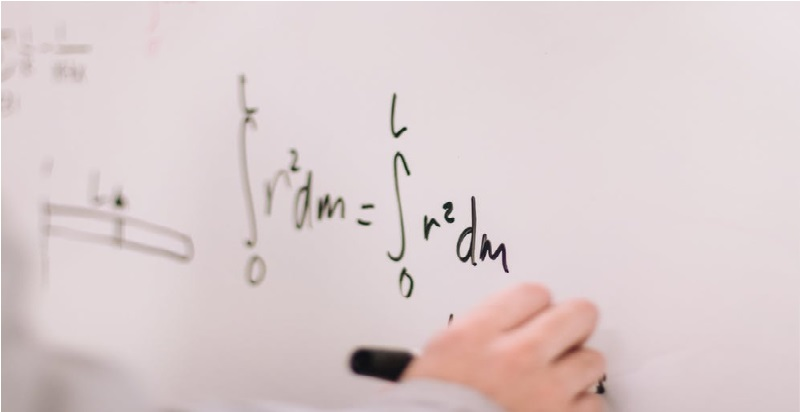

Licenciaturas
Las ciencias de la educación, perteneciente a las Ciencias sociales y Humanas, que se encarga del estudio de la educación.
El objeto principal de estudio de esta ciencia es estudiar a la educación como un fenómeno socio-cultural, es decir que existen conocimientos de otras ciencias que pueden ayudar a comprender lo que realmente es la educación, como por ejemplo, la historia, la psicología, la sociología, la política, entre otras.
La contaduría es la práctica o disciplina fundamentada en los conocimientos contables y que se enfoca en el conocimiento fiel de la empresa de cara a su funcionamiento y la mejor toma de decisiones posible.
La contaduría es considerada una disciplina que está en la búsqueda de la medición, registro e interpretación del capital de una organización de carácter privado o público.
Por medio del uso de la contaduría los individuos y empresas tienen la capacidad de medir y analizar el comportamiento de su capital. Por este motivo es posible distinguir entre dos modalidades o formas de contaduría: pública y privada.
La carrera de Derecho se considera una de las ciencias básicas de los estudios universitarios, un grado tan antiguo como el hombre, que ha ayudado al establecimiento y a la creación de la sociedad actual. En caso de que quieras estudiar Derecho podrás ayudar a configurar la sociedad del futuro, una meta fundamental para el desarrollo humano en óptimas condiciones.
Además, esta disciplina te ayudará a encontrar una lógica a los retos y las principales cuestiones del ser humano. Es una carrera que te ayudará a crecer tanto por dentro como por fuera. En Derecho tendrás la oportunidad de descubrir y de poner en práctica diferentes habilidades que te servirán a lo largo de tu vida. Desde pulir tu capacidad de análisis hasta mejorar tu retórica, oratoria y argumentación, tanto oral como escrita, basándote en principios complejos aplicando la Ley.
La Licenciatura en Psicología es la carrera que forma Psicólogos comprometidos en la búsqueda de conocimientos, técnicas, habilidades y destrezas que promuevan el desarrollo de las personas a quienes se dirige su quehacer profesional; el ejercicio eficiente de la psicología en los diferentes campos de acción.
La administración es una técnica que consiste en la planificación, estrategia u organización del total de los recursos con los que cuenta un ente, organismo, sociedad con el objetivo de extraer de ellos el máximo de beneficios posible según los fines deseados.
El término “administración” proviene del latín, y es la conjunción del prefijo “ad” que significa “hacia” o “dirección” y el sufijo “minister” el cual significa “al servicio de” u “obediencia”, en conjunto se refiere a la prestación de un servicio a otro particular o para algún ente.
Básicamente, podemos decir que se basa en el precepto que afirma que una correcta administración de los recursos aprovecha al máximo las posibilidades de lograr un mejor resultado.
La administración es utilizada tanto en la gestión pública como en la privada. Ambos necesitan de la técnica de organización administrativa para la extracción de recursos. La diferencia reside precisamente en los aspectos cualitativos y cuantitativos de los recursos con los que cuenta para llevar a cabo sus funciones y propósitos.
Bachillerato
18 meses
Es un programa pensado para formar estudiantes competitivos, preparados para la universidad o el sector laboral. El programa consta de 40 materias distribuidas en 18 meses, asistiendo dos horas diarias a clases de lunes a viernes. Contamos con revalidación de materias, para ingresar solo necesitas la determinación y compromiso de terminar tu bachillerato. Los costos y horarios disponibles los puedes solicitar contactándonos por cualquiera de nuestros medios publicados en el área de contacto.
6 meses
Es un programa intensivo dirigido a toda la población con educación trunca, para concluir tu nivel bachillerato. El programa consiste en prepararte con todas las habilidades necesarias para afrontar toda prueba que se te presente, aprenderás habilidades sociales, matemáticas, computacionales, empresariales, etc. Para mayor información, horarios y costos los puedes solicitar contactándonos por cualquiera de nuestros medios publicados en el área de contacto.
3 meses
¿Tienes preparatoria trunca?
¡Deja de buscar pretextos!
Este programa está hecho para ti, certifica tu educación media superior. Para mayor información, horarios y costos los puedes solicitar contactándonos por cualquiera de nuestros medios publicados en el área de contacto.
Cursos

Ingreso a la preparatoria
Los estudiantes al graduarse de la secundaria están generalmente determinados en ingresar en alguna preparatoria de alta demanda y muchas veces los cupos son limitados por lo que el número de aciertos en la prueba COMIPEMS deben de ser altos y para obtener esto los conocimientos deben de estar frescos gracias al estudio y practica tiempo previo a realizar el examen. Es por eso que en ITEB al ser un centro de estudios competitivo preparamos a los estudiantes para este tipo de pruebas. Los costos y horarios disponibles los puedes solicitar contactándonos por cualquiera de nuestros medios publicados en el área de contacto.
Ingreso a la universidad
La alta demanda en las universidades a ocasionado que los exámenes de ingreso sean cada vez más rigurosos, para así lograr que los alumnos que obtengan ingresar sean los mas capacitados en las habilidades estudiantiles. Por eso en ITEB nos esforzamos en formar al estudiante para estas pruebas. Los costos y horarios disponibles los puedes solicitar contactándonos por cualquiera de nuestros medios publicados en el área de contacto.
Regularización en todos los niveles y materias
Si existe algo que se te complica o necesitas asesoría para perfeccionar tus habilidades en cualquiera de las materias, podemos ayudarte a ser mejor en esas áreas que piensas que no es posible porque no es lo tuyo. Los costos y horarios disponibles los puedes solicitar contactándonos por cualquiera de nuestros medios publicados en el área de contacto.